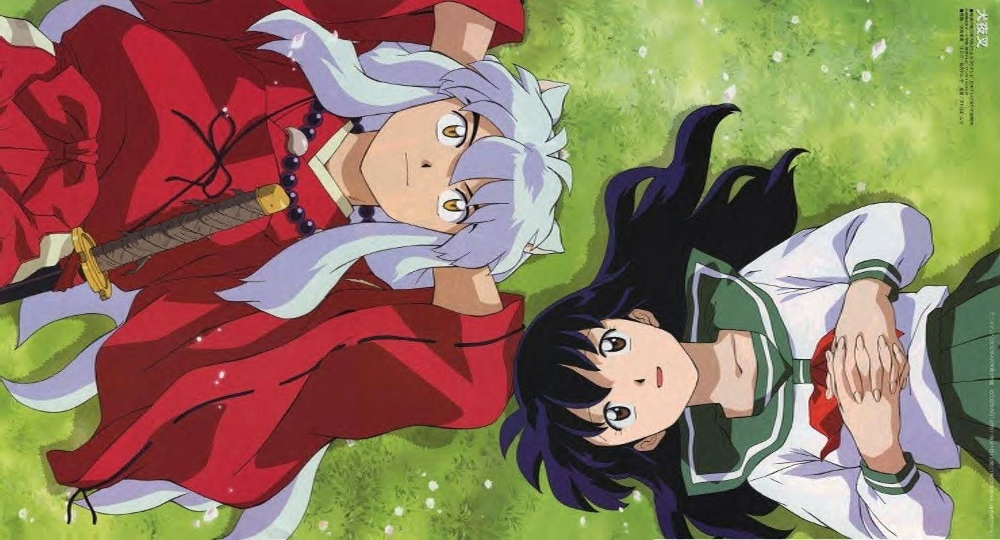
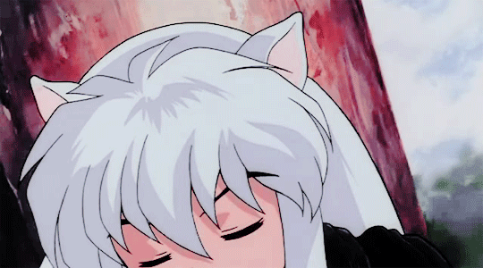
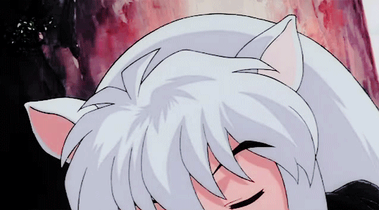

Publicações 2021
Resenha da Vez: Inuyasha
Oi galera aleatória kk, estou aqui hoje com mais uma indicação de anime. O titulo que indico hoje é o anime InuYasha, um dos maiores clássicos do animes e mangás já exibidos. Por InuYasha estar no meu top 05 de animes que marcaram a minha vida, eu não poderia deixar de dedicar um post para essa obra aqui no blog. E como a editora JBC esta para republicar o mangá dele em uma nova versão brasileira esse ano, nada melhor do que fazer um esquenta aqui no blog, ressaltando o porque InuYasha é tão bom e porque você que ainda não assistiu o anime precisa ver mas também comprar o mangá quando chegar nas bancas e lojas especializadas.
Formato: Mangá/ Anime / Filmes
Gêneros: Aventura, comédia romântica, fantasia
Autor: Rumiko Takahashi
Direção: Anime Clássico: Masashi Ikeda, Yasunao Aoki. – Temporada final: Yasunao Aoki
Estúdio: Sunrise
Data de publicação: 16 de outubro de 2000 – 13 de setembro de 2004 / 3 de outubro de 2009 – 29 de março de 2010
Episódios: Anime Clássico: 167 – Temporada final: 26
Filmes: 04
Kagome, é uma colegial comum, que vive uma vida tranquila e cotidiana como todas as outras garotas da sua idade, e que mora no Japão atual. Ela mora com sua mãe, irmão e avô no santuário Shinto. Quando ela vai procurar seu gato, no poço perto de sua casa, um monstro a puxa para o Poço Come-Ossos e a leva consigo. Assim, ela reaparece no período Sengoku do Japão. Aparentemente, um yōkai tinha atacado uma aldeia perto do poço, com objetivo de roubar a Joia de Quatro Almas (四魂の玉, Shikon no Tama?) e matar a sacerdotisa que a protegia. Por Kagome se parecer bastante com a mulher, acaba sendo atacada por um yōkai. Desesperada, ela acaba libertando o hanyou InuYasha, que estava lacrado por uma flecha sagrada em uma árvore. Embora facilmente salve Kagome, ele se revela um problema maior. InuYasha foi selado na árvore há 50 anos pela sacerdotisa Kikyou, que era a guardiã da Joia de Quatro Almas. Ela pediu que, quando morresse, a joia fosse queimada junto a ela, para que ninguém mais pudesse abusar do seu poder. No entanto, Kagome é a reencarnação de Kikyou e traz consigo a Joia de Quatro Almas. Dessa forma, a joia acaba sendo quebrada em vários fragmentos, que se dispersaram por todo o Japão. Cada fragmento é capaz de garantir um grande poder e, por isso, acaba sendo procurado por seres humanos e yōkais. Então, InuYasha e Kagome se propõem a juntar os fragmentos da joia e evitar desastres que ela pode causar problemas Ao longo da jornada, eles unem forças com Shippo, um pequeno yōkai raposa órfão; Miroku, um monge que sofre com uma poderosa maldição passada através dos seus antepassados; e Sango, uma exterminadora de youkais, que teve seu clã morto por seu irmão mais novo, Kohaku, que estava sendo controlado por Naraku. O principal adversário deles é Naraku, que fez com que Kikyou odiasse InuYasha e, posteriormente, o selasse na árvore, além de ter sido o responsável por ter matado o clã de Sango e pela maldição de Miroku.
 